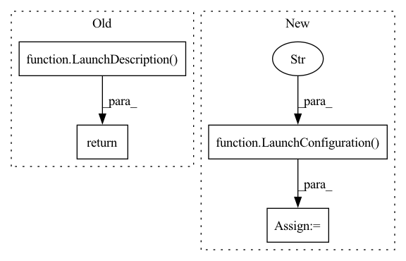

Pattern ID :2769

Before Change
output="screen",
)
return LaunchDescription([container])
After Change
model_name = LaunchConfiguration("model_name")
model_repository_paths = LaunchConfiguration("model_repository_paths")
max_batch_size = LaunchConfiguration("max_batch_size")
input_tensor_names = LaunchConfiguration("input_tensor_names")
input_binding_names = LaunchConfiguration("input_binding_names")
input_tensor_formats = LaunchConfiguration("input_tensor_formats")
output_tensor_names = LaunchConfiguration("output_tensor_names")
output_binding_names = LaunchConfiguration("output_binding_names")
In pattern: SUPERPATTERN
Frequency: 3
Non-data size: 4
Instances
Fragment ID: 11117281
Project Name: nvidia-isaac-ros/isaac_ros_pose_estimation
Commit Name: a6ad6e5eae07bc176a918da89e0d4088102f06ee
Time: 2022-06-30
Author: jaiveers@nvidia.com
File Name: isaac_ros_dope/launch/isaac_ros_dope_triton.launch.py
M Class Name: AnonimousClass
N Class Name: AnonimousClass
M Method Name: generate_launch_description(0)
N Method Name: generate_launch_description(0)
M Parent Class:
N Parent Class:
M File Name: isaac_ros_dope/launch/isaac_ros_dope_triton.launch.py
N File Name: isaac_ros_dope/launch/isaac_ros_dope_triton.launch.py
M Start Line: 18
M End Line: 68
N Start Line: 18
N End Line: 145
'>
Before Change
output="screen",
)
return LaunchDescription([
rclcpp_container,
Node(name="centerpose_decoder_node", package="isaac_ros_centerpose",
executable="CenterPoseDecoder", parameters=[config], output="screen")])
After Change
// DNN Image Encoder parameters
network_image_width = LaunchConfiguration("network_image_width")
network_image_height = LaunchConfiguration("network_image_height")
encoder_image_mean = LaunchConfiguration("encoder_image_mean")
encoder_image_stddev = LaunchConfiguration("encoder_image_stddev")
// Tensor RT parameters
'>
Fragment ID: 11117257
Project Name: nvidia-isaac-ros/isaac_ros_pose_estimation
Commit Name: a6ad6e5eae07bc176a918da89e0d4088102f06ee
Time: 2022-06-30
Author: jaiveers@nvidia.com
File Name: isaac_ros_centerpose/launch/isaac_ros_centerpose.launch.py
M Class Name: AnonimousClass
N Class Name: AnonimousClass
M Method Name: generate_launch_description(0)
N Method Name: generate_launch_description(0)
M Parent Class:
N Parent Class:
M File Name: isaac_ros_centerpose/launch/isaac_ros_centerpose.launch.py
N File Name: isaac_ros_centerpose/launch/isaac_ros_centerpose.launch.py
M Start Line: 19
M End Line: 69
N Start Line: 21
N End Line: 147
'>
Before Change
output="screen",
)
return LaunchDescription([container])
After Change
]
// DNN Image Encoder parameters
network_image_width = LaunchConfiguration("network_image_width")
network_image_height = LaunchConfiguration("network_image_height")
// Tensor RT parameters
model_file_path = LaunchConfiguration("model_file_path")
'>
Fragment ID: 11117280
Project Name: nvidia-isaac-ros/isaac_ros_pose_estimation
Commit Name: a6ad6e5eae07bc176a918da89e0d4088102f06ee
Time: 2022-06-30
Author: jaiveers@nvidia.com
File Name: isaac_ros_dope/launch/isaac_ros_dope_tensor_rt.launch.py
M Class Name: AnonimousClass
N Class Name: AnonimousClass
M Method Name: generate_launch_description(0)
N Method Name: generate_launch_description(0)
M Parent Class:
N Parent Class:
M File Name: isaac_ros_dope/launch/isaac_ros_dope_tensor_rt.launch.py
N File Name: isaac_ros_dope/launch/isaac_ros_dope_tensor_rt.launch.py
M Start Line: 32
M End Line: 67
N Start Line: 20
N End Line: 144